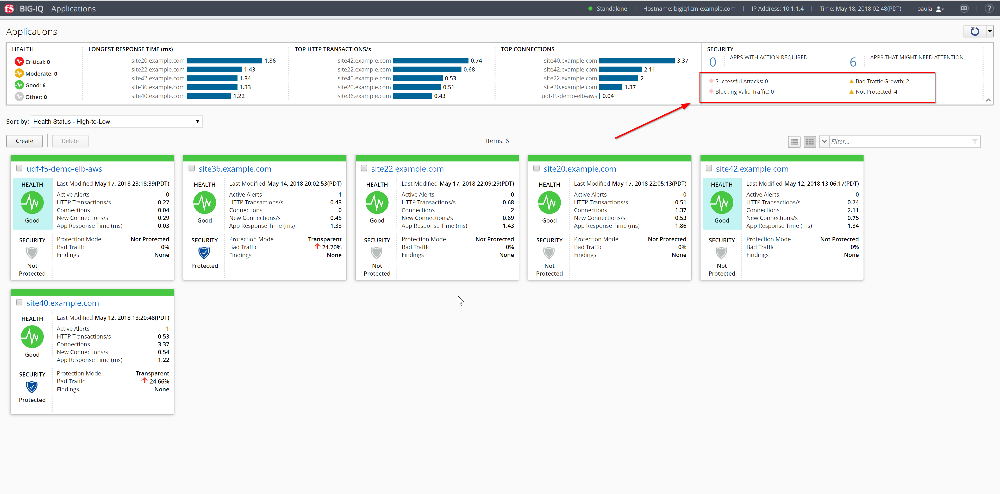
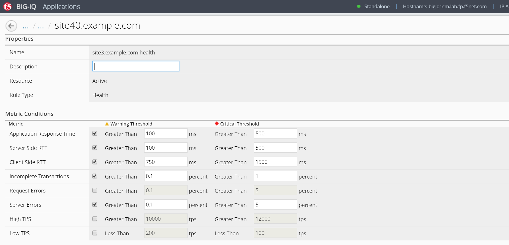
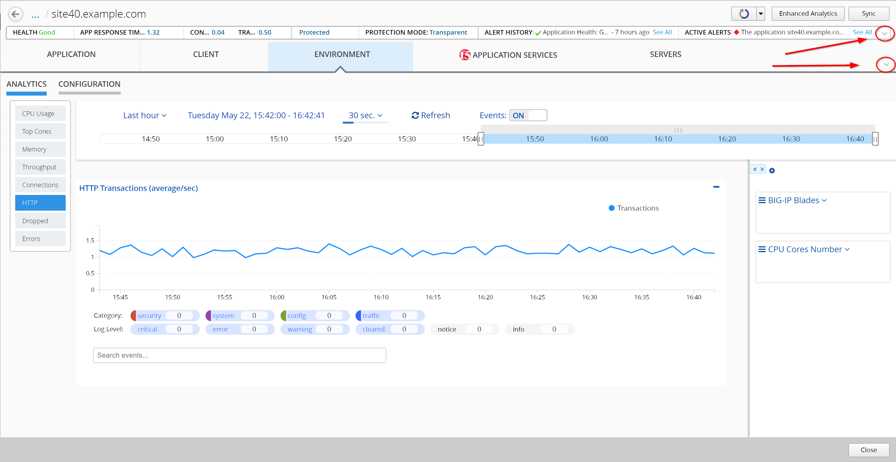
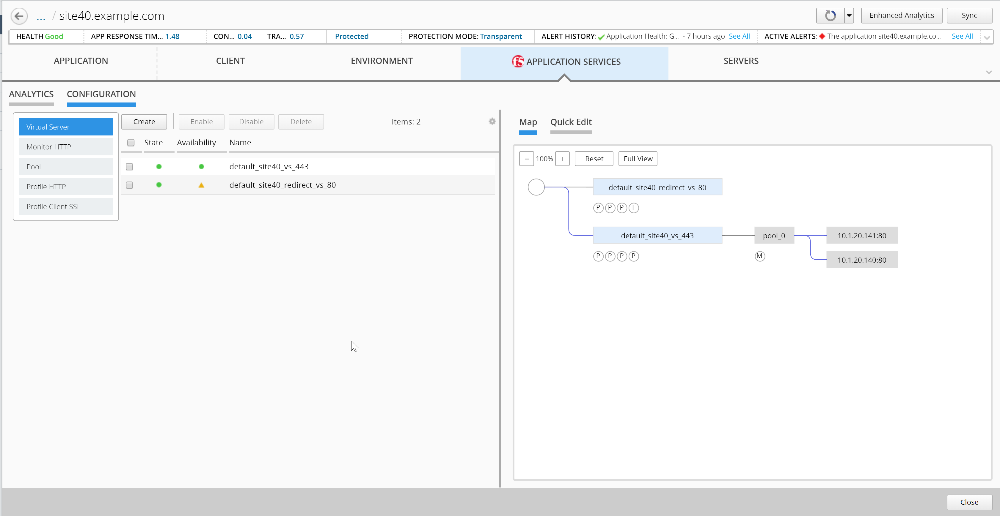
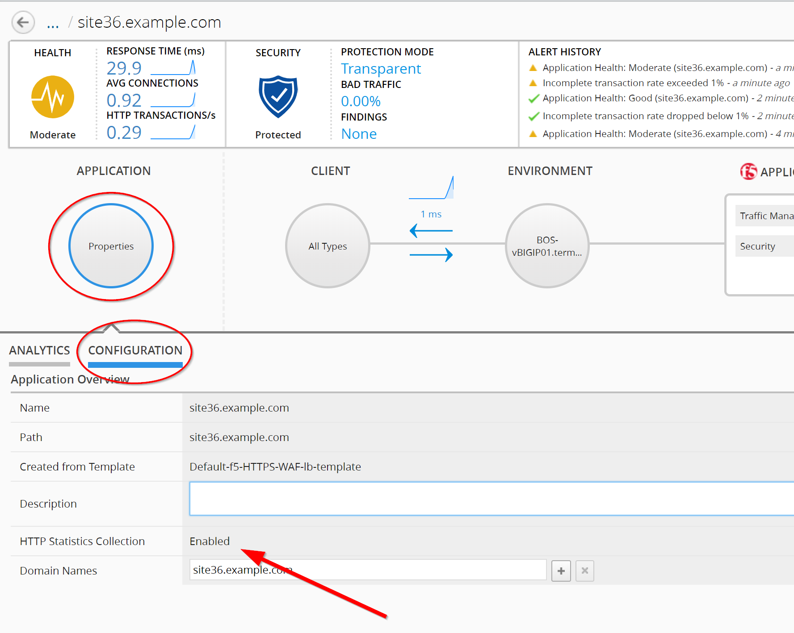

F5 BIG-IQ & Cloud Edition Lab > Class 3: BIG-IQ Analytics (Cloud Edition) > Module 1: Analytics in BIG-IQ Source | Edit on
Lab 1.1: General Views and Configuration Applications¶
Connect as paula.
The screen lists all of your applications and current summary data about health, traffic performance and security. Use this screen to create, delete, deploy and oversee all of your applications.
Summary Bar provides summary information about your application’s health, traffic and security status. Click the elements in this area to filter or sort the application list.
Health: Lists the number of applications at each health status.
Traffic Performance: Lists the top 5 applications for each performance data indicator.
Security: Lists the number of applications that have an active security alert.
Use one of the screen’s filter and sort settings to isolate an application of interest, based on summary data or active alerts.
{kind=link}
Filter on Not Protected Applications:

Select an application name to redirect you to a more detailed dashboard.
This screen displays the current health, traffic performance, security, and configuration details for an application. Use this screen to detect application trends, to identify issues that can affect performance, and to adjust application configuration settings.

The summary bar at the top of the screen provides information about the application’s health, traffic performance, security status, and alerts. The Health area indicates the application’s health status.
The Traffic Performance area provides current information about the application’s Longest Response Time, Top HTTP Transactions, and Top Connections.
The Security area provides current information about the Web Application Security policy’s protection status, the amount of malicious traffic, and the active, critical security findings.
The alerts areas list the application’s alerts. You can click See All to see a full list of the application’s alerts.
The Alert History area lists the application’s five most recent alerts.
The Active Alerts area lists the application’s ongoing and most severe alerts.
Click the icon to view, or edit, the application health alert rules.
{kind=link}
The application configuration map directly below the summary bar provides information about your application’s properties, client types, network and device configuration, F5 application services, and server configuration. You can click the icons to display detailed information in the ANALYTICS and CONFIGURATION areas.

Analytics Tab
The ANALYTICS area displays the application’s traffic data trends and events and alerts, within a selected time period.
Tip: You can use the arrow at the bottom right of application configuration map and summary bar to expand the Analytics area on the screen.
{kind=link}
You can use the time settings above the chart to focus the data to a specific time period. You can also control the data refresh period and events in the charts.
Note
To view events and alerts in charts, ensure that the Events button is set to ON.
The charts display interactive information about the application’s traffic connections, latency times, and response outcomes. Click the menu to the left to navigate among the charts. Take the time to navigate through the different graphs.
The events and alerts are displayed as numbered icons within the charts. You can click these icons to display an information table below the chart. You can click rows within the table to view detailed information. Click the buttons below the chart area to filter out displayed events and alerts by Category or Log Level.
Click the arrow tab to the right of the chart to expand the dimensions area. To filter data in charts and dimensions, expand the dimensions to select specific objects listed. Note: Certain dimensions list aggregated data. Click Enhanced Analytics to enable object data for these dimensions.
Take the time to navigate in all the different charts.
Note
When using the filters, do not enter the first / in your query.
{kind=link}
Configuration Tab
Click CONFIGURATION to view and evaluate the settings for application properties. The Application owner can easily update the BIG-IP configuration (Virtual Server, Node, etc..).
Take the time to navigate in all the different menu.
{kind=link}
If you select the Properties object, you can check if the HTTP Statistics Collection is enabled or disabled.
{kind=link}